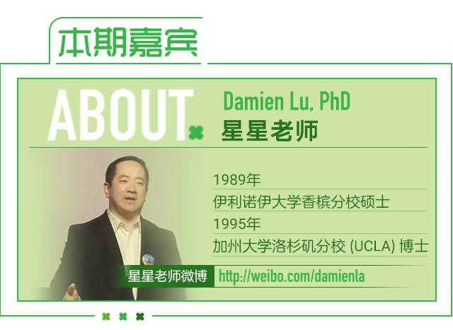
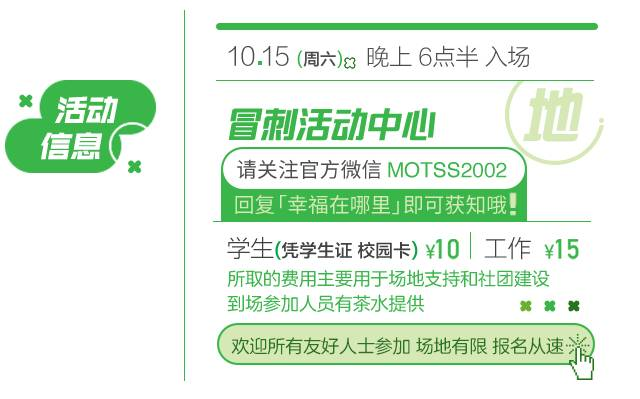

心理讲座 | 星星老师带你探讨多元性别与亲密关系

自我认知
恋爱
出柜
哪些问题一直困扰着你？
对于多元性别你有什么看法
又想了解些什么呢？
今次我们请到了星星老师
与我们共同探讨这些话题
星星老师是同志资讯公益网站“爱白网”同志问答栏目的主持人，十年如一日地解答同志朋友们关于情感关系、性知识与性技巧、性倾向与性观念、性安全与性心理等方面的问题。这次是星星老师第三次受酷儿论坛邀请前来杭州与大家交流。之前讲座，到场朋友们都获益匪浅。

从上个世纪90年代开始，星星便致力于亚洲LGBT人群的平权事业，并主办了第一个面向全世界亚洲同志的网络论坛。1998年，他加入了刚刚成立的爱白网(www.aibai.com)，该网旨在为全球使用中文的LGBT人群提供重要资讯。
星星已主持爱白网同志问答栏目超过15年之久，所回答的问题涵盖了生理及心理健康、艾滋病、情感关系以及其他与中国LGBT人群相关的话题。目前，他已经回答了数万条问题。

下面为大家摘录了一些爱白网上星星老师与网友们的问答
pppe：
老师
为什么中国直男这么让人着迷（我相信您也被他们深深的吸引，只是理智告诉您，他们不会爱上我们，所以我们自卑的走开？？），他们特别仗义，爷们，而且帅的也很爷们（同志只能叫时尚和帅不挂边），呵护其他人，胸怀宽阔，不外貌协会，懂得珍惜，这些品质在GAY里的100里也挑不出一个，是否这是由社会心理学决定的？我们同志是否只有自卑的远离直男？
星星：
你“相信”的是臆想，所以你先研究一下自己的心理问题吧。分不清现实与幻想的区别，是很危险的。

3少：
老师请问我老想1个人，老想亲他抱他睡觉，做梦梦到和他做爱。
是不是我爱上对方了呢？
星星：
这不是爱，只是欲望，爱情还包括欲望之外的其他东西，仅仅有欲望是不足够建立爱情的。

小小：
父母问我怎么知道自己是同志的 应该如何回答
我这么说行吗
初中青春期就对同性脸红心跳想亲抱他有勃起反应
星星：
你问问他们，他们怎么知道自己是异性恋的，告诉他们同性是一样的。

如果你也有着同样的问题
或者有新的问题想要咨询
赶！快！报！名！吧！
